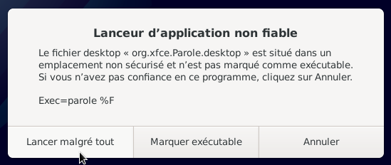
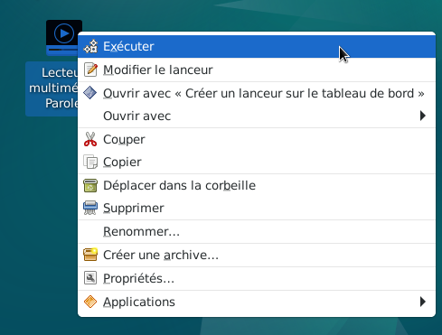

&
Ouvrir une application à partir du raccourci du bureau : Le site Xfce
Après avoir ajouté un raccourci d'une application sur le bureau, on peut l'ouvrir de 2 façons.
Dans cet exemple, ouvrir l'application « Parole ».
L'icône (le raccourci) de l'application « Parole » (Lecteur multimédia...) doit se trouver sur le bureau.
Pour créer un raccourci, se rendre au chapitre :
Ajout de raccourcis d'une application sur le bureau.





Si besoin se rendre au chapitre :
Gestionnaire de fichiers avec Thunar : Définir
l'application par défaut par l'utilisateur

Informations sur le logiciel libre et Merci.
Marques déposées :
Ce site ne fait pas partie de Debian, n'est pas produit par le projet
Debian, ni approuvé par le projet Debian.
Ce site n'est pas affilié à Debian. Debian est une marque déposée appartenant
à Software in the Public Interest, Inc.
Contribuer :
Ce site ne fait pas partie de XFCE, n'est pas produit par le projet
XFCE, ni approuvé par le projet XFCE.
Ce site n'est pas affilié à XFCE.
Ce site est juste réalisé par un passionné.